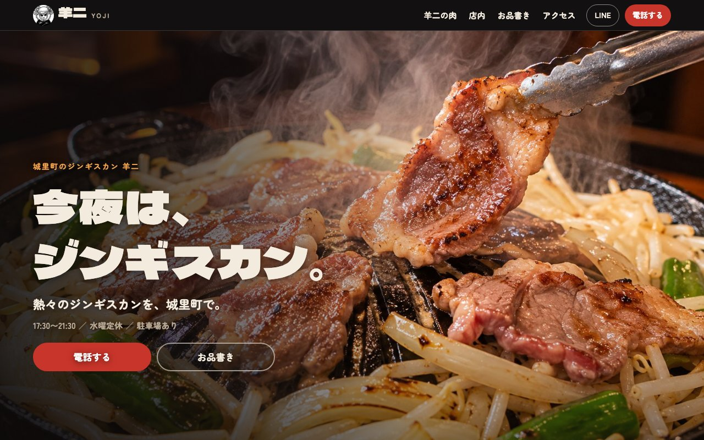

Homepage
ホームページ制作
小さなお店・個人事業・地域の事業者が、気軽にホームページを持てるようにお手伝いします。作って終わりではなく、公開後も毎月のデータを見ながら、一緒にホームページを育てていきます。
-
制作費10,000円（税別）
小さなお店や個人事業でも始めやすい、分かりやすい料金です。
-
スマートフォン対応
スマホからでも見やすく、使いやすい画面に仕上げます。
-
お店・事業に合わせて制作
業種や雰囲気、伝えたいことをお聞きしてから形にします。
-
電話・地図・SNSへの導線づくり
電話・Googleマップ・LINEやSNSなど、見た方が問い合わせや来店につなげやすい導線を整えます。
-
公開後の管理・保守
公開後も月額5,000円（税別）で、管理・保守や文章・写真の差し替えなどに対応します。
-
毎月のレポートと改善提案
毎月アクセスデータを確認・分析してレポートにまとめ、必要に応じて改善をご提案します。ご承諾いただいた軽微な改善は月額料金内で対応し、その後の状況も確認しながら育てていきます。
公開後は、データを見ながら育てていきます
運用・保守（月額5,000円・税別）では、公開後も毎月アクセスデータを確認し、月次Webレポートでお伝えします。
- 公開・計測
- レポートで分析
- 必要に応じて改善提案
- 軽微な改善
- その後を確認
※改善の必要がない場合や、判断に必要なデータが十分でない場合は、経過観察・現状維持とすることがあります。改善はご承諾をいただいてから行い、軽微な修正に当たるものは月額料金内で対応します。それ以外の変更は、事前に内容をご説明し、必要に応じてお見積りしたうえで、ご承諾をいただいてから対応します。アクセス数や問い合わせ数などの成果をお約束するものではありません。
Works
制作実績
実際に、こんなホームページを制作しています。
※掲載している実績は、各事業者様の了承を得て紹介しています。
Pricing
料金・運用保守
ホームページ制作の基本料金です。制作から公開後の管理まで、続けてお任せいただけます。
※表示価格はすべて税別です。
基本プラン
ホームページ制作
事業紹介・サービス紹介・会社や店舗の情報・お問い合わせなどを中心とした小規模なホームページです。スマートフォンにも対応します。
制作費10,000円
- 前払い不要
- 完成を見てから決められます
運用・保守月額5,000円
いずれも税別
完成したホームページを見てから決められます
ホームページ制作は前払い不要です。まず制作を行い、完成したホームページを実際にご確認いただいてから、採用して公開するかどうかを決めていただけます。気に入らなければ、初期構築費はいただきません。「どんなホームページになるか分からないまま先に支払う」という心配はありません。採用される場合は初期構築費をお支払いいただき、入金を確認してから正式に公開します。
※採用されない場合、ホームページは正式公開されず、制作したホームページを利用することはできません。
- ご契約
- 制作
- 完成をご確認
- 採用なら初期構築費のお支払い
- 入金確認後に正式公開
運用・保守に含まれるものサイトの管理・保守、文章や写真の差し替えなどの軽微な修正、月次Webレポート（アクセスデータの確認・分析、必要に応じた改善のご提案）を含みます。
- 公開した月の運用・保守料は無料です
- 月額の運用・保守は、公開の翌月から始まります
- 最低利用期間は、月額の運用・保守が始まった月から3か月です
※基本範囲を超える場合は、事前に内容と追加料金をご説明します。
※修正内容やご依頼の量によっては、対応にお時間をいただく場合があります。大幅な変更や追加制作については、事前に内容をご説明し、必要に応じてお見積りしたうえで、ご承諾をいただいてから対応します。ご承諾なく追加料金が発生することはありません。
※月次Webレポートについてはよくある質問もご覧ください。
ホームページ・業務アプリ制作のご契約について
- 料金は、制作時の「初期構築費」と、公開後の「月額の運用・保守」です。公開・利用開始月の保守料はかからず、翌月分からいただきます。
- ホームページ制作は前払い不要です。ご契約後に制作を行い、完成内容をご確認（検収）いただいたうえで、採用して正式公開するかどうかをお選びいただけます。採用される場合は初期構築費の全額をご請求し、請求日から7日以内にお支払いいただきます。入金を確認してから正式に公開します。採用されない場合は初期構築費をいただかず、正式公開もしません（制作したホームページを利用することはできません）。
- 業務アプリ制作の初期構築費は、ご契約時に50％、完成後の検収（仕上がりのご確認）後に残りの50％をお支払いいただきます。制作は、ご契約時のお支払いを確認してから始めます。
- 運用・保守は、料金が始まる月から最低3か月のご利用が必要です。例えば10月に公開・利用開始した場合、11月・12月・1月が最低利用期間です。
- ホームページ・業務アプリは当センターが公開・運用するサービスです。運用・保守を解約すると、公開・サービス提供も終了します。
- システムやソースコードのお渡し・移管は、原則として行っていません。お預かりした素材や、アプリに登録された業務データはお返しします。
まずは無料相談から
初回のヒアリング・業務診断は無料です。課題がまとまっていなくても、今困っていることをお聞かせください。
Other Services
その他のサービス
ホームページ制作のほかに、業務アプリの制作と、AI導入の伴走支援も承っています。
業務アプリ制作
簡易業務アプリ
一つの業務課題を解決するための小規模なWebアプリです。たとえば次のような業務に対応します。
- 領収書・証憑管理
- 顧客管理
- 日報入力
- 見積書作成
- 簡易在庫管理
- 問い合わせ管理
- 簡易予約管理
- 紙・Excel・スプレッドシートで行っている業務のデジタル化
業務アプリ単体
簡易業務アプリ
一つの業務課題を解決するための小規模なWebアプリ（顧客管理・日報入力・見積書作成など）
- 制作費
- 50,000円
- 運用・保守
- 月額10,000円
基本範囲を超える場合は、事前に内容と追加料金をご説明します。
AI導入伴走支援
城里町および周辺地域の中小企業・個人事業主向けの「AI導入伴走支援」です。AIの使い方講座やアドバイスだけのコンサルティングではなく、業務の棚卸しから運用・定着まで一気通貫で伴走します。
こんなお悩みに
AIを使いたいのに、進め方が分からない事業者を前に進めます
- AIを使いたいが、何から手をつければいいか分からない
- ツールを試しても定着せず、結局元のやり方に戻ってしまう
- 外注のコンサルは提案だけで、実装は自分たちでやる必要がある
- 業務改善を一人で考える余裕がなく、後回しになっている
- 相談したいが、継続的に伴走してくれる相手がいない
- 専門用語が多く、結局何が自社に合うのか分からない
- 相談
- 業務整理
- AI活用設計
- 実装
- 運用・改善
01. 業務棚卸フェーズ
現状の業務の流れ、時間がかかっている作業、困りごとを一つずつ整理します。まとまっていない課題でも構いません。
02. 設計フェーズ
棚卸した内容をもとに、どこにAIやツールを組み込むと効果が出るかを設計します。優先順位も一緒に決めます。
03. 実装フェーズ
設計した内容を、実際に手を動かして形にします。AIの導入・設定に加え、必要に応じて簡易ホームページや簡易業務アプリも制作します。
04. 定着フェーズ
導入して終わりにせず、実際の運用を見ながら改善サイクルを回し、現場に定着するまで伴走します。
伴走支援に含まれる内容
- 現在の業務内容のヒアリング・棚卸し
- AIを活用できる業務の選定
- AI導入方法の設計
- 実際のAI導入・設定
- 業務フロー改善
- 運用開始後の改善・定着支援
- 必要に応じた簡易ホームページ制作
- 必要に応じた簡易業務アプリ制作
- 伴走契約期間中の簡易ホームページ・簡易アプリの運用・保守
アドバイスで終わらせず、必要なものは実際に作ります
業務改善に必要と判断した場合は、伴走支援の中で簡易ホームページや簡易業務アプリを制作します。制作そのものが目的ではなく、AI導入と業務改善を形にするための手段です。
月額契約
AI導入伴走支援
業務の棚卸し → 改善方法の設計 → AI導入 → 必要なツールの実装 → 運用・定着まで一気通貫で伴走します。
月額30,000円
最低契約期間：3か月（以降は月単位で更新）
- 必要に応じた簡易ホームページ制作を含みます
- 簡易業務アプリ制作は別途50,000円です
- 伴走契約中は、制作した簡易ホームページ・簡易アプリの運用・保守料金は伴走料金に含まれます
- 月1〜2回の訪問診断・設計相談＋LINE等での随時相談・実装作業
※基本範囲を超える機能や作業が必要な場合は、着手前に内容と追加料金をご説明します。
伴走契約終了後の運用・保守
伴走期間中に制作した簡易ホームページ・簡易業務アプリの運用・保守料金は、伴走期間中は伴走料金に含まれます。伴走契約の終了月の翌月末日までは「移行猶予期間」として公開を続けますので、その間に今後のご利用をお決めください（猶予期間中の修正などの作業は、必要に応じて別途お見積りします）。
継続してご利用いただく場合は通常の運用・保守契約へ移行し、猶予期間の翌月1日から下記の料金がかかります（例：9月末に伴走終了 → 10月末まで猶予期間 → 11月1日から運用・保守開始）。日割り計算はありません。単体制作向けの最低3か月は、伴走支援から移行する場合には重ねて適用しません。移行しない場合は、猶予期間の終了をもって公開・サービス提供を終了します（システムの移管は原則として行いません。アプリの業務データはお返しします）。
- 簡易ホームページ
- 月額5,000円
- 簡易業務アプリ
- 月額10,000円
Why Us
選ばれる理由
小さなお店・個人事業・地域の事業者が、無理なくホームページを持ち続けられることを大切にしています。
1. 地域密着で、相談しやすい
城里町を中心に、小さなお店・個人事業・地域の事業者をサポートしています。顔の見える関係で、気軽にご相談いただけます。
2. 初期費用を抑えて始められる
ホームページの制作費は10,000円（税別）。前払い不要で、完成したホームページを見てから採用を決められます。気に入らなければ初期構築費はいただきません。はじめてのホームページでも、負担を抑えて安心して始められます。
3. 作って終わりにせず、データを見ながら育てる
公開後は月額5,000円（税別）で運用・保守を行います。毎月アクセス状況を確認・分析し、必要に応じた改善のご提案や軽微な改善、その後の確認を続けながら、ホームページを一緒に育てていきます。
4. 必要になったら、その先も相談できる
ホームページだけでなく、必要に応じて業務アプリの制作やAIの導入・活用支援についてもご相談いただけます。
Flow
ご契約までの流れ
初めての事業者の方でも進め方が分かるよう、お問い合わせから制作・伴走開始までの流れを明確にしています。
-
01
お問い合わせ
LINE・電話・メールでご連絡ください。課題がまとまっていなくても、今困っていることだけで大丈夫です。
-
02
初回ヒアリング・業務診断（無料）
訪問して現状の業務や課題を伺います。この段階では費用はかかりません。
-
03
ご提案・ご契約
伺った内容をもとに、ホームページ制作・業務アプリ制作・伴走支援の範囲や進め方をご提案します。ご納得いただいたうえで契約を結びます。
-
04
制作・伴走支援スタート
ホームページ・業務アプリは制作から公開後の管理まで、伴走支援は設計・実装・定着まで、定期的に確認しながら進めます。ホームページ制作は前払い不要で、完成したホームページを見てから採用を決められます。採用される場合は初期構築費をお支払いいただき、入金確認後に正式公開します。
FAQ
よくある質問
初めての事業者の方が不安に感じやすい点をまとめています。
ホームページ制作の料金はいくらですか？
制作費は10,000円（税別）、公開後の運用・保守は月額5,000円（税別）です。制作費は前払い不要です。完成内容をご確認（検収）いただき、採用して正式公開される場合に初期構築費をご請求します（請求日から7日以内にお支払い、入金確認後に正式公開）。採用されない場合、初期構築費はいただきません。運用・保守には、サイトの管理・保守、文章や写真の差し替えなどの軽微な修正、月次Webレポートを含みます。公開した月の保守料は無料で、月額の運用・保守は公開の翌月から始まります。最低利用期間は、月額の運用・保守が始まった月から3か月です。基本範囲を超える場合は、着手前に内容と追加料金をご説明します。
完成したホームページが気に入らなかった場合はどうなりますか？
採用されない場合、初期構築費はいただきません。その場合、ホームページは正式公開されず、制作したホームページや当センターが作成した文章をご利用いただくことはできません。完成前の修正（デザイン案の修正2回まで、完成確認時の修正1回まで）は制作費に含まれますので、気になる点はまずご相談ください。
公開後にホームページを修正してもらえますか？
はい。文章や写真の差し替え、営業時間・定休日・電話番号などの情報変更といった軽微な修正は、月額の運用・保守料金に含まれます。修正内容やご依頼の量によっては、対応にお時間をいただく場合があります。大幅な変更や追加制作については、事前に内容をご説明し、必要に応じてお見積りしたうえで、ご承諾をいただいてから対応します。ご承諾なく追加料金が発生することはありません。
月次Webレポートでは何をしてもらえますか？
アクセス解析サービスから取得できるアクセスデータを毎月確認・分析し、前月のアクセス状況をレポートにまとめてお届けします。必要に応じて改善をご提案しますが、改善の必要がない場合や、判断に必要なデータが十分でない場合は、経過観察・現状維持とすることもあります。ご承諾いただいた改善のうち、軽微な修正に当たるものは月額の運用・保守料金に含まれます。それ以外の改善は、事前に内容をご説明し、必要に応じてお見積りしたうえで、ご承諾をいただいてから対応します。改善後は、取得できるデータの範囲でその後の状況を確認します。なお、アクセス数や問い合わせ数などの成果をお約束するものではありません。
月次Webレポートが作成できない場合はどうなりますか？
アクセス解析サービスの障害・仕様変更・計測状況等により、月次Webレポートの全部または一部を提供できない場合があります。月額の運用・保守料金は、サイトの管理・保守や軽微な修正などを含むサービス全体の料金のため、このような場合も、そのことのみを理由とした料金の減額・返金は原則として行っておりません。あらかじめご了承ください。
AIに詳しくない事業者でも利用できますか？
はい。AIは主にこちら側で活用するため、お客様が操作を覚える必要はありません。業務内容に応じて、必要なところだけ分かりやすくご説明します。
小規模事業でも依頼できますか？
もちろんです。ひとりで運営している個人事業主や、少人数の事務所・店舗・作業場からのご相談を想定しています。
相談だけでも大丈夫ですか？
大丈夫です。初回のヒアリング・業務診断は無料です。まずは「どこに時間がかかっているか」「何を改善したいか」を整理するところから始められます。
個人情報や機密情報の扱いが心配です
重要な情報の扱いは事前に確認し、AIや外部サービスへ入力しない方がよい情報・取り扱い注意点を共有した上で進めます。不安がある場合は別の方法をご提案します。
料金はどれくらいかかりますか？
AI導入伴走支援は月額30,000円（税別）、最低契約期間は3か月です。必要に応じた簡易ホームページ制作と、伴走契約中のホームページ・業務アプリの運用保守を含みます。簡易業務アプリの制作は伴走契約中でも別途50,000円（税別）です。初回のヒアリング・業務診断は無料です。
ホームページや業務アプリだけの依頼もできますか？
はい。簡易ホームページ制作は10,000円、運用保守は月額5,000円です。簡易業務アプリ制作は50,000円、運用保守は月額10,000円です（いずれも税別）。基本範囲を超える場合は、着手前に内容と追加料金のお見積りをご説明します。ホームページ制作は前払い不要で、完成したホームページを見てから採用するかどうかを決められます。採用される場合に初期構築費をご請求し（請求日から7日以内にお支払い、入金確認後に正式公開）、採用されない場合は初期構築費はいただきません。簡易業務アプリの初期構築費は、ご契約時に50％、検収（完成のご確認）後に残りの50％をお支払いいただきます。公開・利用開始月の保守料は無料で、翌月から最低3か月のご利用をお願いします。
伴走契約が終わった後、制作したホームページやアプリはどうなりますか？
伴走契約中の運用・保守料金は、伴走料金に含まれています。伴走契約の終了月の翌月末日までは「移行猶予期間」として公開を続けますので、その間に今後のご利用をお決めください（猶予期間中の修正などの作業は、必要に応じて別途お見積りします）。継続してご利用いただく場合は通常の運用・保守契約（簡易ホームページ月額5,000円、簡易業務アプリ月額10,000円、いずれも税別）へ移行し、猶予期間の翌月1日から保守料金がかかります（例：9月末に伴走終了なら11月1日から）。単体制作向けの最低3か月は重ねて適用しません。移行しない場合は、猶予期間の終了をもって公開・サービス提供を終了します。
ご利用・運用について（契約を終了する場合）
運用・保守契約を終了した場合は、ホームページまたはアプリの公開・サービス提供も終了します。他社やお客様へのシステム移管は原則として行っておらず、ソースコードやシステム本体は移管の対象外です。一方で、お客様からお預かりした素材はお返しし、アプリ内にお客様が登録・蓄積した業務データは、ご希望に応じてCSV等の一般的な形式でお返しします。
Contact
お問い合わせ
LINE・電話・メールからご連絡ください。事業所名・訪問先・相談内容が分かるとスムーズです。
ご連絡方法
送信テンプレート
【事業所名 / お名前】
【ご連絡方法】電話 / メール / LINE
【訪問先（事務所・店舗・作業場の住所目安）】
【相談したい業務内容】
【希望日時】
【補足】